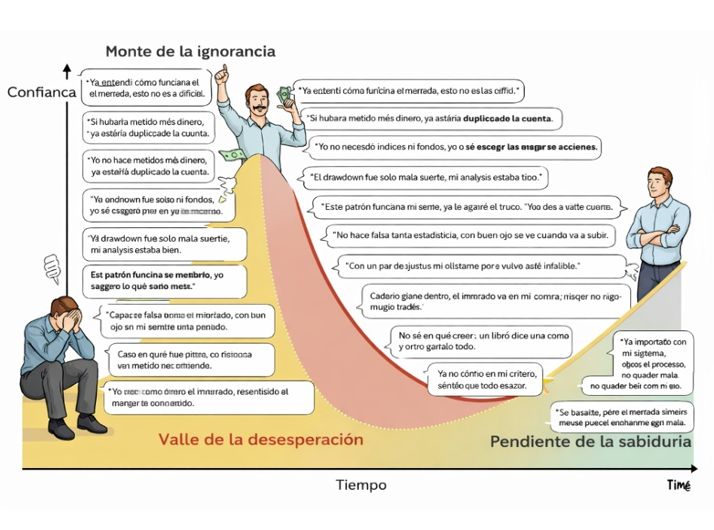
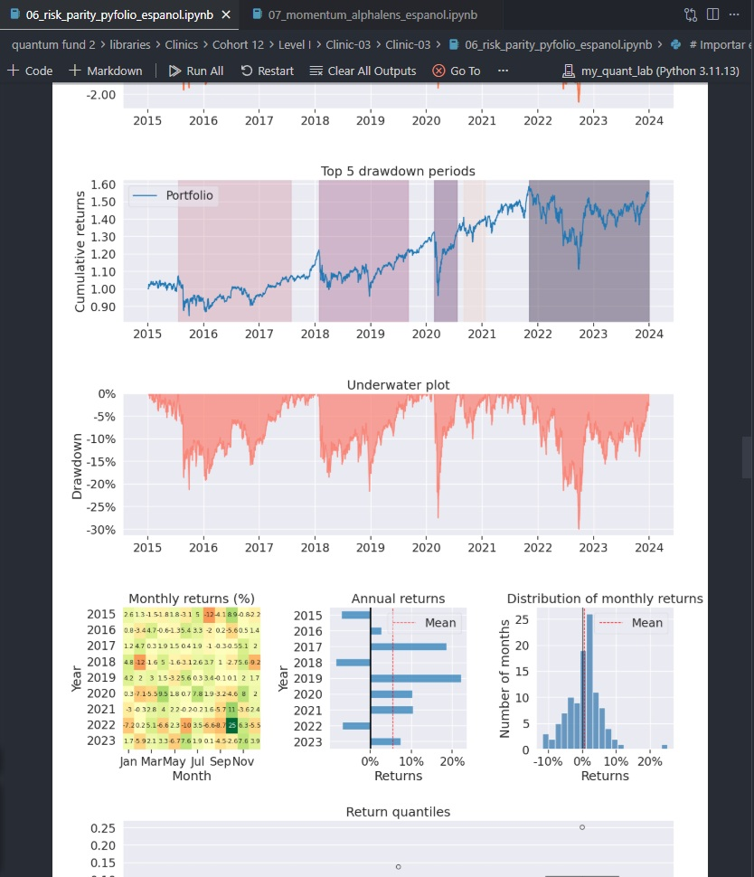
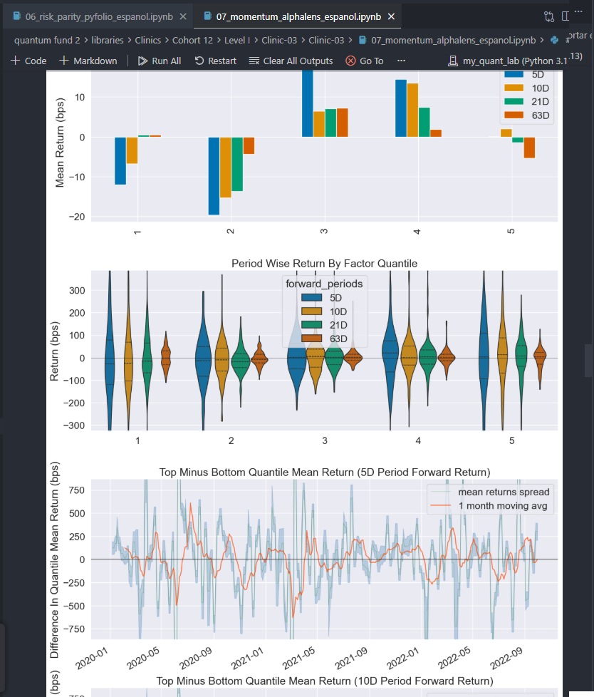
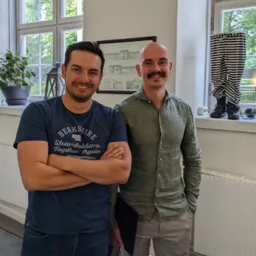
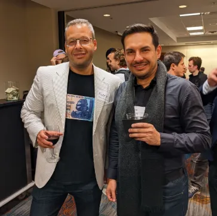

Decisiones impulsivas
Entradas por intuición, salidas por miedo. Sin un sistema verificado, cada operación es una apuesta emocional disfrazada de análisis.
Mentoría basada en evidencia · Latinoamérica
Te enseñamos a auditar cualquier sistema de trading con el rigor de un científico de datos — y a dominar los 10 sistemas que la evidencia académica respalda en la última década. Sin promesas mágicas. Con bibliografía.
§ 01 · El problema
La mayoría de los traders toman decisiones con técnicas que les enseñó alguien — que a su vez las aprendió de alguien — sin que nadie, en toda la cadena, comprobara si aún funcionan.
De 19.646 day traders brasileños que persistieron más de 300 sesiones, el 97% perdió dinero. Solo el 1,1% ganó más que el salario mínimo de Brasil.1
Chague, De-Losso & Giovannetti (2020) — el estudio más grande hecho en Latinoamérica.
Entradas por intuición, salidas por miedo. Sin un sistema verificado, cada operación es una apuesta emocional disfrazada de análisis.
El mercado cobra matrícula todos los meses a quien opera patrones que dejaron de funcionar hace años — o que nunca funcionaron.
Un mes ganas, tres pierdes. Sin evidencia estadística no puedes distinguir habilidad de suerte — ni saber qué corregir.

§ 02 · El método
Nuestra diferencia no es un indicador secreto: es un proceso. El mismo filtro que usa la literatura académica para separar las estrategias reales del ruido — traducido a decisiones prácticas de trading.
¿El backtest incluye las empresas que quebraron y los fondos que cerraron? La mayoría de los «sistemas ganadores» mueren con esta sola pregunta.
Si un sistema tiene 9 parámetros calibrados al pasado, no predice el futuro: lo memoriza. Te enseñamos a detectarlo con validación fuera de muestra.
Comisiones, spread y deslizamiento. Estrategias «rentables» en papel mueren al contacto con un broker real. Lo medimos antes de operar.
Con miles de estrategias probadas en el mundo, un t-stat de 2 ya no basta: es el estándar que propuso la academia para no comprar casualidades.2
Cuando una estrategia se vuelve famosa, su retorno cae en promedio un 58%.4 Te enseñamos a estimar cuánto «alfa» queda vivo — y dónde.
La mitad de las anomalías publicadas no sobrevive una replicación seria.5 Solo enseñamos lo que ha sido verificado por terceros con datos abiertos.3
Nada de capturas de MetaTrader con tres operaciones ganadoras. Esto es lo que producimos y lo que aprenderás a leer: distribuciones de retornos, drawdowns, retornos por cuantil y pruebas de robustez.


§ 03 · Los resultados
Existen, están publicados y los verás funcionando. Pero no diremos sus nombres aquí — y la razón es la misma ciencia que enseñamos: cuando una estrategia se populariza, su retorno decae un 58% en promedio.4 Lo que sí mostramos: su evidencia, su año de publicación y qué tan robusto sigue cada uno. Los nombres se revelan dentro de la mentoría.
| # | Sistema | Evidencia | Estado 2016–2025 |
|---|---|---|---|
| 01 | Nombre reservado — se revela en la mentoría | Journal de primer nivel · 1993 | Robusto sobrevivió toda replicación independiente |
| 02 | Nombre reservado — se revela en la mentoría | Journal de primer nivel · 2012 | Robusto rentable en las crisis de 2020 y 2022 |
| 03 | Nombre reservado — se revela en la mentoría | Journal de primer nivel · 1989 | Con matices vivo donde pocos pueden operar |
| 04 | Nombre reservado — se revela en la mentoría | Journal de primer nivel · 2013 | Robusto |
| 05 | Nombre reservado — se revela en la mentoría | Journal de primer nivel · 2013 | Robusto se potencia en combinación |
| 06 | Nombre reservado — se revela en la mentoría | Journal de primer nivel · 2014 | Robusto con control de costos |
| 07 | Nombre reservado — se revela en la mentoría | Journal de primer nivel · 1988 | Persistente en índices |
| 08 | Nombre reservado — se revela en la mentoría | Literatura académica · 30+ años | Cíclico exige ejecución barata |
| 09 | Nombre reservado — se revela en la mentoría | Caso real documentado · 2011–2019 | Sistematizable con reglas estrictas |
| 10 | Nombre reservado — se revela en la mentoría | Journal especializado · 2014 | Riesgo alto requiere control de colas |
Nota honesta: «robusto» no significa «gana todos los meses». Significa que la prima existe, sobrevivió replicaciones independientes y compensa sus drawdowns a quien la ejecuta con disciplina. La bibliografía completa sigue publicada al final de esta página — qué paper corresponde a qué sistema es parte de lo que descubrirás adentro. Y también verás los sistemas que no pasaron el filtro, para que nadie vuelva a vendértelos.
¿Quieres saber cuáles son — y si el que usas hoy está en la lista?
Aplicar a la mentoría§ 04 · Casos de estudio
Estos son los traders e inversores cuyos métodos descomponemos en el programa: qué hicieron exactamente, qué parte resiste el escrutinio estadístico y qué puede replicar un trader individual.

«Qullamaggie» · Suecia
De $9.100 a más de $80M en ~8 años con breakouts episódicos. Estudiamos su position sizing y sus reglas de salida.
Berkshire Hathaway · EE. UU.
1.236% en Peninsula Capital y $70K → $264M en su cuenta de retiro. Concentración extrema y paciencia de años.
Kase Capital · EE. UU.
Gestionó más de $200M en fondos value. Proceso, checklists y autopsias de errores: el anti-impulso.

Praetorian Capital · EE. UU.
~$339M bajo gestión buscando asimetrías macro con catalizador. Pocas apuestas, convicción medida.
Pabrai Funds · India/EE. UU.
El arte de «clonar» a los mejores inversores con listas de verificación. Humildad estadística aplicada.
Psicología y sizing · EE. UU.
Creador del SQN (System Quality Number) y referente de position sizing. La matemática de no quebrar.
Ninguno está afiliado a Trading Científico ni avala este programa. Son los casos que estudiamos con datos públicos — y el estándar al que aspiramos.
§ 05 · El programa
No es un curso grabado que verás a medias. Es trabajo directo sobre tu capital, tus sistemas y tu plan de trading — con la exigencia de un comité de inversión.
Auditamos tu historial de operaciones, tu sistema actual (si existe) y tu relación con el riesgo. Salimos con una línea base medible.
Dominarás los 6 filtros: supervivencia, overfitting, costos, significancia, decaimiento y replicación. Nunca más comprarás un sistema sin desarmarlo.
Uno a uno: lógica económica, evidencia, parámetros, costos reales y en qué mercados de LatAm y EE. UU. se ejecutan mejor. Eliges 2–3 para tu arsenal.
Position sizing, límites de pérdida, rutina semanal y métricas de seguimiento. Te gradúas con un plan escrito que un profesional firmaría.
+20 años · JPMorgan, BP Trading, AWS
Diseño de sistemas financieros institucionales de alto volumen. Especialista en ejecución algorítmica y gestión de riesgos.
+18 años · IA y modelos predictivos
Modelos predictivos para empresas globales y formación de profesionales en ciencia de datos. La estadística traducida a decisiones.
§ 06 · Aplicación
La mentoría es 1-a-1 y abrimos pocas plazas por trimestre. El proceso empieza con una conversación, no con un pago.
Escríbenos un mensaje directo contándonos tu experiencia y tu objetivo. Dos líneas bastan.
30 minutos, sin costo. Auditamos tu situación y te decimos — con honestidad — si podemos ayudarte.
Si ambos vemos encaje, hablamos de inversión y agenda. Si no, te llevas el diagnóstico gratis.
o síguenos primero: @ney.trading
§ 07 · Preguntas frecuentes
No — y desconfía de quien lo haga: es la señal más fiable de fraude. Lo que garantizamos es un método verificable, acompañamiento real 1-a-1 y que nunca más evaluarás un sistema «por fe».
No exigimos años de pantalla. Sí necesitas matemática básica, disciplina y disposición a llevar registro. La estadística la traducimos nosotros a decisiones prácticas.
Más importante que el monto es que sea capital de riesgo: dinero que puedas exponer sin comprometer tu vida. Durante la formación se opera pequeño a propósito.
Un curso te da información; una mentoría te da criterio. Trabajamos sobre tus operaciones, tus backtests y tu plan — con sesiones en vivo y revisión semanal. Por eso los cupos son limitados.
No. Es un programa educativo: no gestionamos tu dinero ni recomendamos valores específicos. Te entrenamos para que tú evalúes con evidencia.
Es una inversión de alto nivel y la conversamos en la llamada de diagnóstico, cuando ambos sepamos si el programa encaja contigo. Si buscas la opción más barata, con honestidad: no somos nosotros.
§ 08 · Referencias
Porque esa es la diferencia. Verifica cada afirmación. Y sí — entre estas referencias están varios de los 10 sistemas de la Tabla 1. ¿Cuál es cuál? Eso se responde adentro.